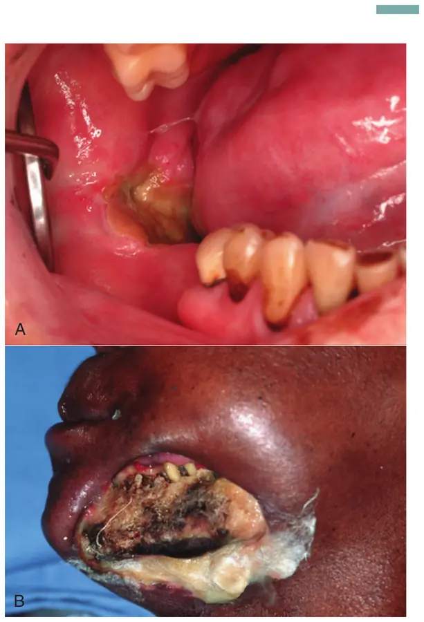

نسخه استخراجشده؛ ترجمه یا تأیید علمی انجام نشده است. وضعیت: captured
اگر تصمیم گرفته شد برخی یا همهی دندانها پیش از پرتودرمانی کشیده شوند، پرسش این است: چگونه؟

پاسخ، با یک وارونگی غافلگیرکننده شروع میشود: بهطور کلی اصول کشیدن آتروماتیک برقرارند — ولی مفاهیم حفظ استخوان کنار گذاشته میشوند، و تلاش میشود بخش قابلتوجهی از زائدهی آلوئولار همراه دندانها برداشته شود و بستن اولیهی بافت نرم به دست آید.
و چرا این وارونگی؟ با آغاز پرتودرمانی، فرایند طبیعی بازسازی استخوان مهار میشود؛ اگر هر ناحیهی تیز استخوانی وجود داشته باشد، زخم مخاطی با برهنه شدن استخوان رخ میدهد.
پس دندانها معمولاً بهشیوهی جراحی برداشته میشوند، با برگرداندن فلپ و برداشتن سخاوتمندانهی استخوان.
و سه نکتهی تکنیکی همراهش:
و واقعیتی که نباید از یاد ببری: دندانپزشک در مسابقهای با زمان است.
فاصلهی میان کشیدن و آغاز پرتو — و صادقانه باید گفت: پاسخ قطعیای برای این پرسش وجود ندارد.
و یک استثنای هوشمندانه دربارهی مولر سوم: اگر بیمار مولر سوم مندیبل نیمهرویشیافته دارد، برداشتنش ممکن است محتاطانه باشد تا از عفونت پریکورونال پیشگیری شود. ولی بهطور کلی، گذاشتن دندانی که کاملاً درون استخوان مندیبل نهفته است تا در جای خود بماند، مصلحتآمیزتر از برداشتنش و انتظار برای ترمیم است.
بگذار با یک اعتراف شروع کنیم: «آیا میتوان دندانها را پس از پرتودرمانی کشید، و اگر بله چگونه؟» — اینها احتمالاً دشوارترین پرسشهایی هستند که باید پاسخ داده شوند. هر دندانپزشکی دربارهی این موضوع نظری دارد، و ادبیات علمی گزارشهای متناقض دارد.
و یک توصیف بیپرده: کشیدنهای پس از پرتو، نامطلوبترین کشیدنهایی هستند که دندانپزشک تا به حال انجام خواهد داد — چون پیامد همیشه نامعلوم است.
پاسخ به «آیا میتوان؟» قطعاً بله است. پرسش مهمتر «چگونه؟» است:
و تکنیک کمکی که نشان داده مؤثر است — اکسیژن پرفشار (HBO):
و شواهدش: در یک کارآزمایی بالینی آیندهنگر که این رژیم را با تجویز پروفیلاکتیک آنتیبیوتیک پیش از کشیدن و بدون اکسیژنرسانی پرفشار مقایسه کرد، بروز استئورادیونکروز بهطور معناداری کمتر بود: ۵٫۴ درصد در برابر ۳۰ درصد. ولی انصافاً باید افزود: دیگران نیاز به HBO را پیش و پس از کشیدنهای پس از پرتو زیر سؤال بردهاند و بدون آن انجامش میدهند.
و یک واقعیت لجستیکی: چون بحث قابلتوجهی دربارهی مدیریت کشیدن جراحی در بیمار پرتودیده وجود دارد، و اتاقهای اکسیژن پرفشار کمی در دسترساند، و بروز عوارض شدید نسبتاً بالاست — توصیه میشود که یک جراح دهان و فک و صورت بیمار پرتودیدهای را که نیاز به کشیدن دارد مدیریت کند.
و پوسیدگی پس از پرتو: دندانهایی که پوسیدگی پس از پرتودرمانی پیدا میکنند باید بیدرنگ مراقبت شوند تا از گسترش بیشتر عفونت پیشگیری شود.
و برنامهی پیگیری پس از پرتو: دندانپزشک باید بیمار را هر ۳ تا ۴ ماه ببیند. در این ویزیتها جرمگیری انجام و فلوراید موضعی اعمال میشود؛ بیمار باید با تریهای اختصاصی برای اعمال فلوراید موضعی مجهز و در استفادهی روزانهی آن آموزش داده شود. استفاده از دهانشویهی فلوراید ۱ درصد به مدت ۵ دقیقه در روز، بروز پوسیدگی پرتویی را کاهش میدهد.
و دو پایش دیگر: همهی بیماران باید برای شروع احتمالی تریسموس پایش شوند — و پیشگیری از تریسموس آسانتر از درمانش است؛ بیمار باید با هر کاهش در حداکثر فاصلهی بیندندانی، تمرینهای باز کردن دهان انجام دهد. و همهی بیماران باید هفتگی وزن شوند تا مشخص شود وضعیت تغذیهای کافی را حفظ میکنند — چون ترکیب موکوزیت و خشکی دهان، دریافت خوراکی را بهشدت ناراحتکننده میکند، و سوءتغذیه با به تأخیر انداختن ترمیم بافتهای دهانی مشکلات بیشتری میسازد.